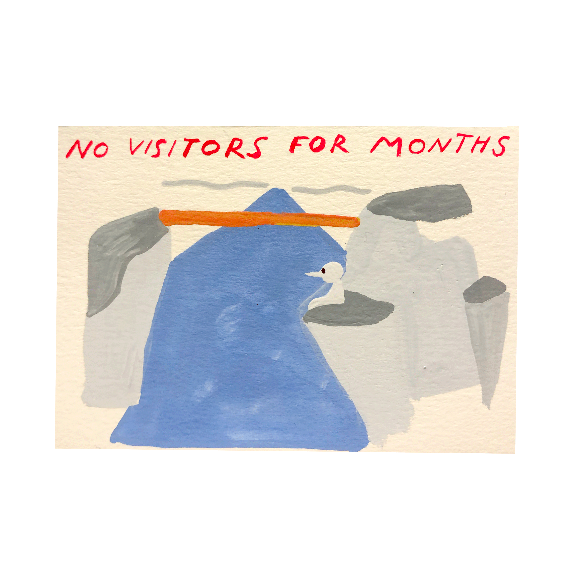
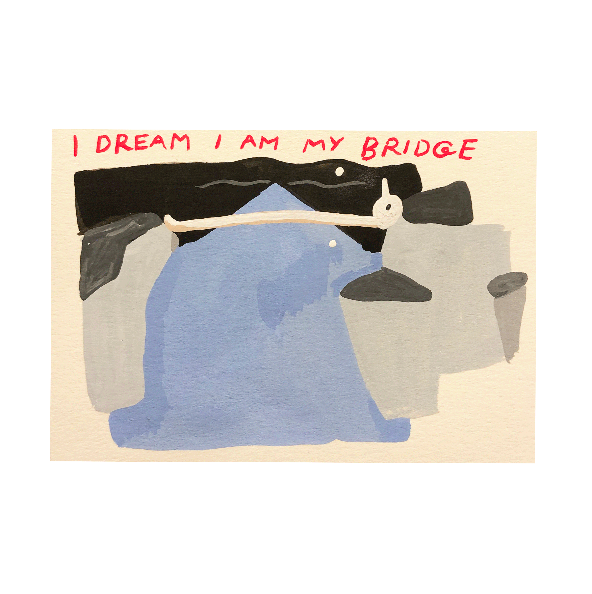
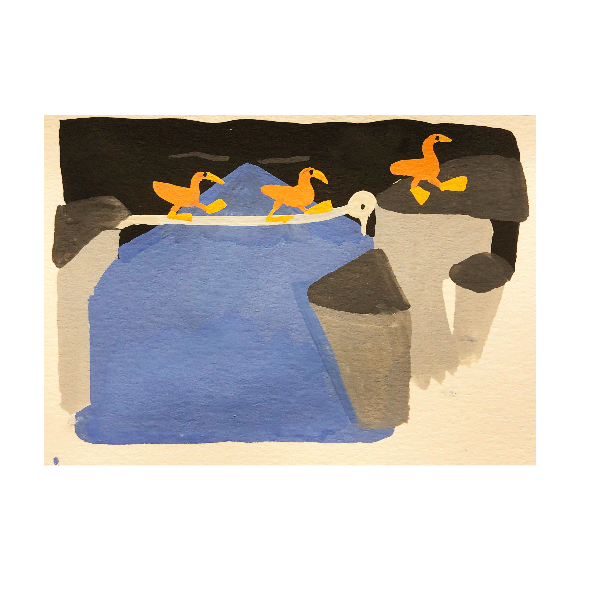
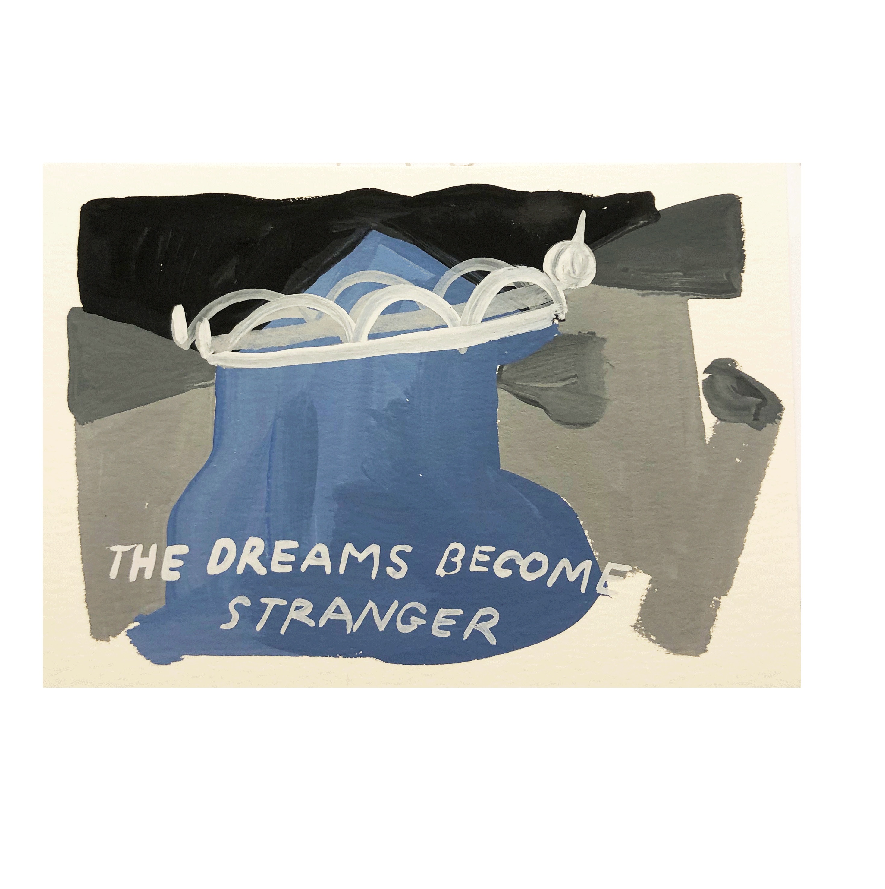
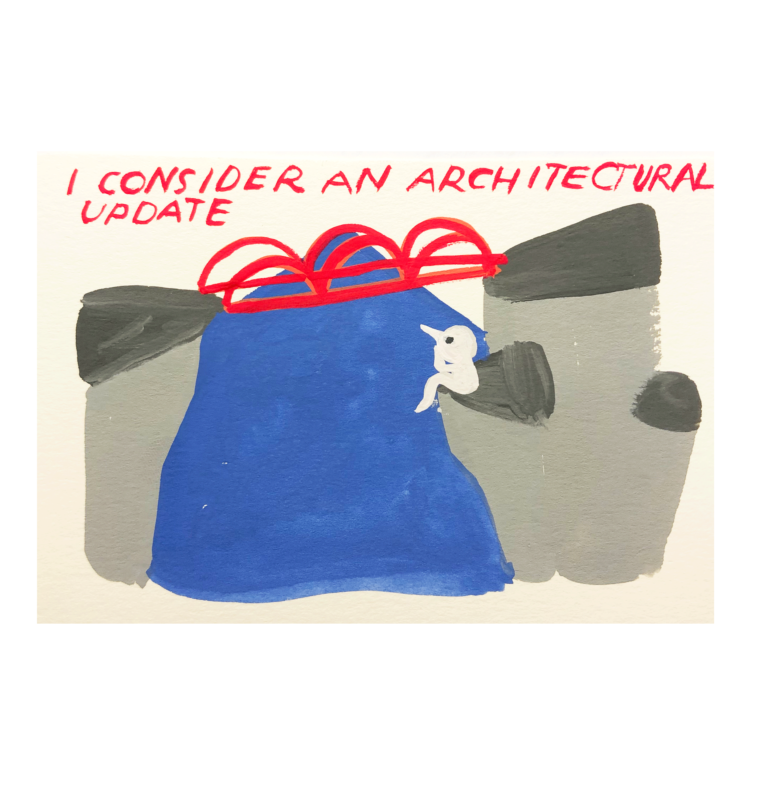
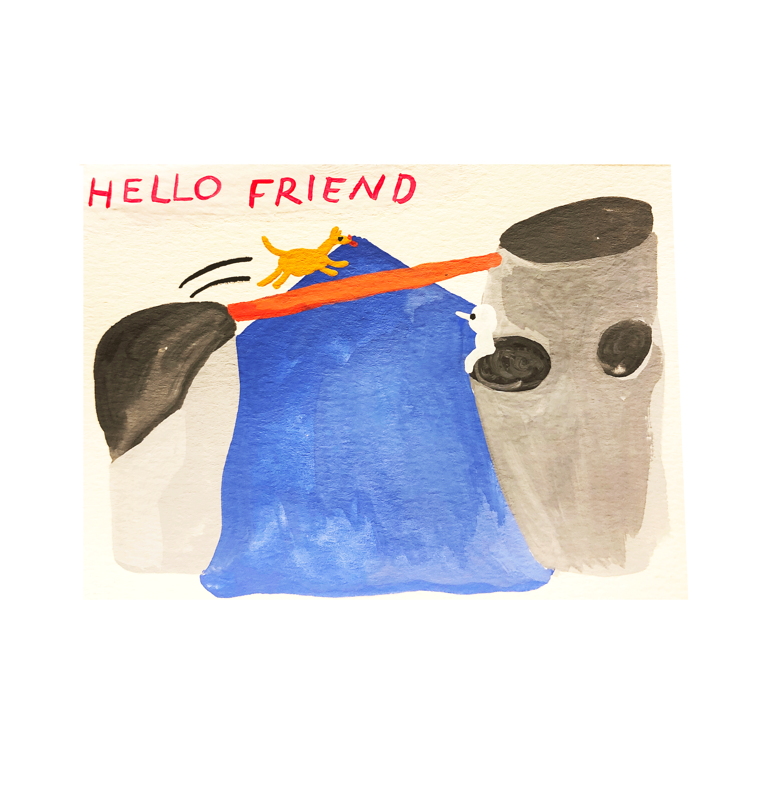
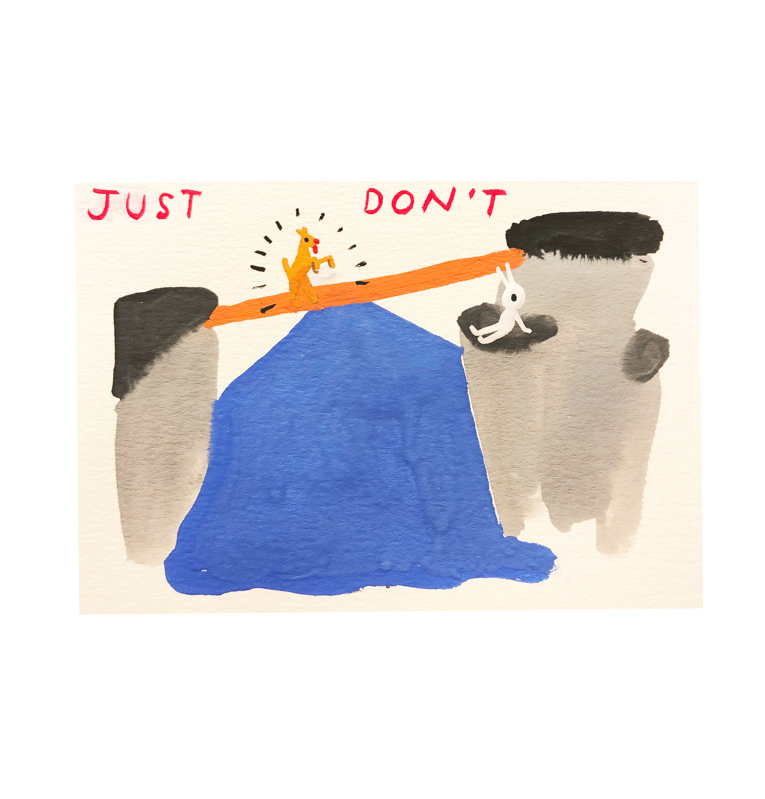
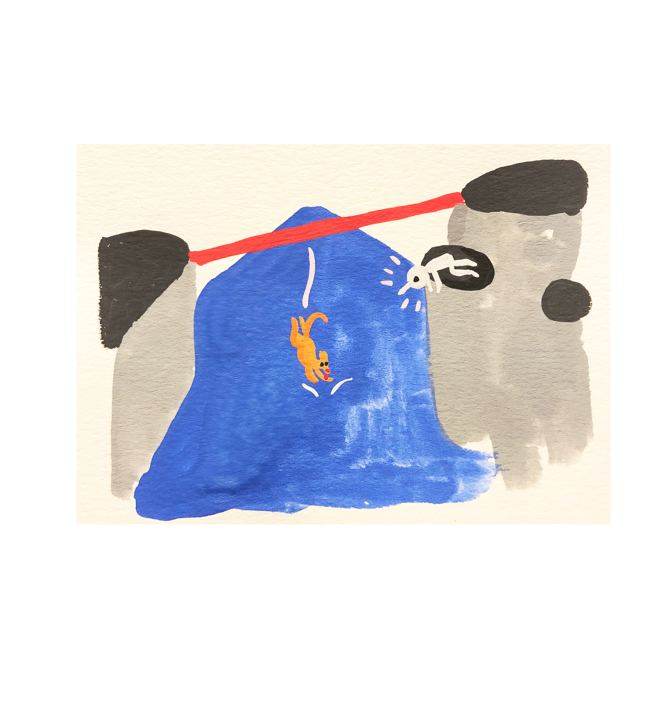
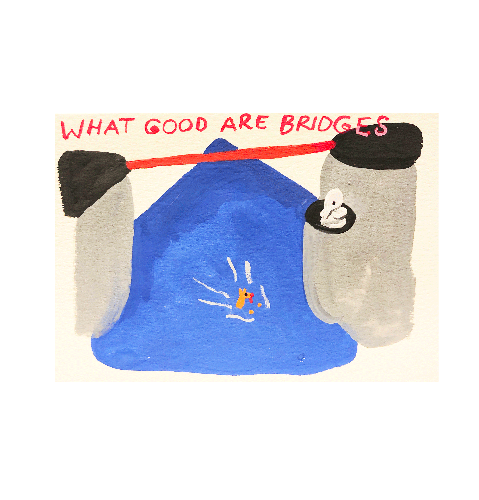

Indeterminacy project
Narrative indeterminacy follows the principles of John Cage’s musical indeterminacy, which is the ability of a piece to be played in different ways. This project is about using some limitations and rules – such as a story structure and basic plot – which can be interpreted by the artist in a number of different ways.
Project description Google doc
Crossing the river
A comic strip about a bird-like monster who lives under a bridge. In every strip, the monster encounters someone (or something) trying to cross the bridge.
Nobody turns up





New friend





Archive
Template – all comics are variations of this template
Nobody turns up
Perpetual escape (abandoned)
Concept was a cat who is continually getting trapped in things and escaping
Initial discovery
A bird in the hand is worth two in the bush